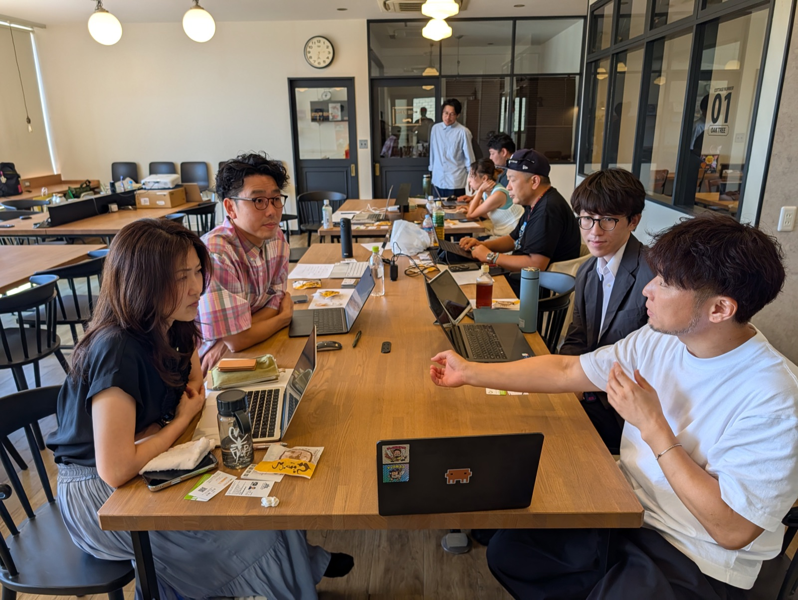
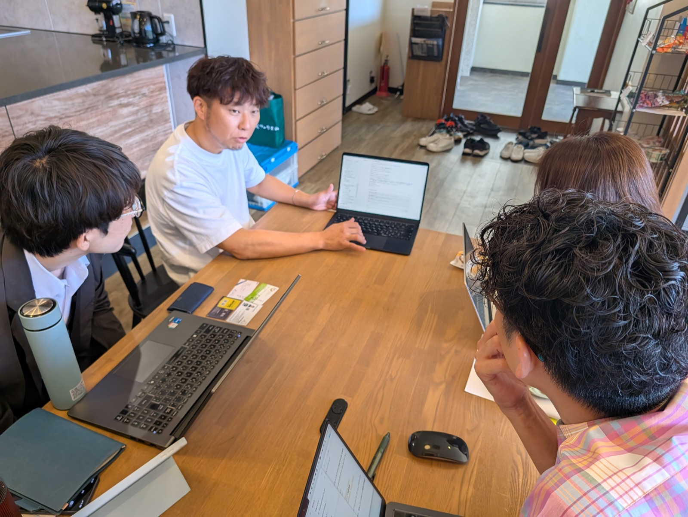
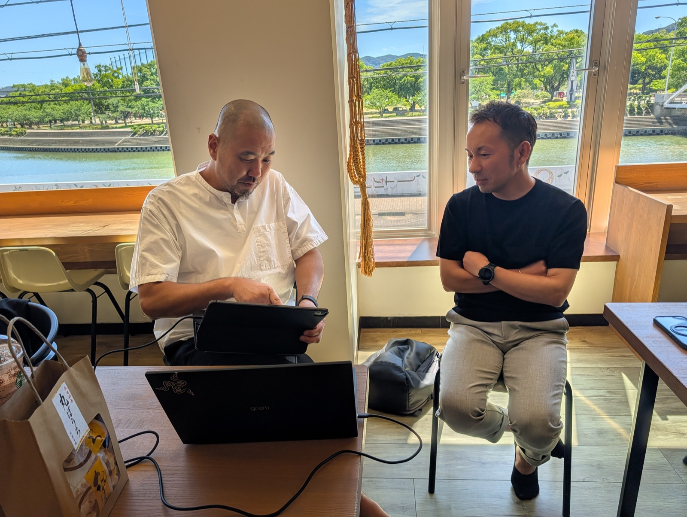

← イベント一覧
REPORTSASEBO CLAUDE CODE HACKATHON2026 . 07 . 27
3時間で、自分の仕事の道具を
作る
教わる、話を聞く会ではなく、全員がその場で手を動かし作る会にしました。
文・西信好真（西海みずき信用組合 地域振興室／Claude Community Ambassador） │ 2026年7月27日（月）13:00〜16:00 佐世保市内＠オンド
SASEBO ’26
 各自がノートPCを持ち込み、自分の作業を進める。講義形式ではなく共同作業に近く相互の教え合いが生まれていました。
各自がノートPCを持ち込み、自分の作業を進める。講義形式ではなく共同作業に近く相互の教え合いが生まれていました。
7月27日の午後、佐世保でミニハッカソンを開きました。3時間のプログラムを、作るものの宣言に30分、実制作に120分、成果物発表に30分。前回の交流会が「事例を持ち寄って紹介する会」だったのに対し、今回は、その場で全員が自分で作って持ち帰りました。集まったのは10名。福祉、広告、インテリア、NPO、製造と業種はばらばらで、Claude Codeを4か月使っている人も、今日が初めての人も同じテーブルに座りました。
INSIGHT
やってみて分かったこと
主催して見ていて、前回とは違うなと感じた点を4つ書きます。
01
「宣言」から入ると、手が止まらない
最初の30分で一人ずつ「今日これを作ります」と宣言をしてもらいました。何を作るか決めないまま画面に向かうとつまづきがちですが、宣言してしまうと、あとは手を動かすだけになります。また、お互いのテーマがわかるので、サポートもしやすくなりました。出てきたテーマは10件。全員が別々のものを作りました。
02
出てきたテーマが、全部「自分の実務」だった
役所と裁判所に出す書類の自動入力、営業の相談をLINEから拾って取りこぼしを防ぐ仕組み、夏休みの子どもの部活の送迎車の担当管理、インテリアの施工事例をまとめるサイト。どれも「今抱えている課題」に役立つ道具でした。
03
初めての人と4か月目の人が、隣に座る
制作タイムは、教え合いも自由にしました。詰まった人の画面を経験者が覗いて、その場でアドバイスする。この形だと、初心者向けの説明を全員で聞く時間が要りません。申込の時点で「聞いたことはあるが、使ったことはない」という方もいましたが、相互に教えられるのは、この形式の利点だと思います。
04
最後は、セキュリティの話に
「どれぐらい踏み込んで使って大丈夫なのか」という質問が制作中にも出ており、終盤はそのまま危機管理の情報交換の時間になりました。作れることが分かった直後に、どこまでAIに触らせるかの線引きの話に。この課題は、実際に使い始めた人たちの集まりならではだと思います。
制作

作業の合間に、隣の人の画面を見ながら手が止まった部分を教え合う。
事例紹介｜福祉 × AI
受注から請求まで人が要らない通販、補助金を毎朝拾う仕組み、弁当の宅配
冒頭に、すでに事業として動いている仕組みの紹介がありました。福祉施設で製造した商品を、注文が入ったら施設へ発注し、発送して請求書まで出す——そこまで自動で回っていて、本人は入金の確認だけ。ほかに、全国の補助金情報を毎朝集めて自社に合うものを提案し、そのまま申請書の下書きまで作る仕組み。福祉施設が作った弁当を学童へ届けるサービスなど。
「ロス品1,000個を別の商品に転用して、ブランディングもデザインも自分で。デザイナーに頼めば数百万の仕事が、自分の時間2日でできました。」
制作テーマ
10年使えるアンケート基盤から、部活の送迎車の担当管理まで
制作時間に入る前の宣言の例。「アクセサリーの素材を作っている会社なので、10年・20年使い続けられるデータベース型のユーザーアンケートを作る」（製造業）。ゴルフの動画を投げると分析して練習メニューを返すアプリ。インテリアコーディネートのポートフォリオサイト。自分の習慣管理ツール。営業のAI秘書。夏休みの部活送迎の担当管理など
進め方
いきなり作らせない。壁打ち → 仕様書 → 実装
制作中に共有したコツです。最初から作らせるのではなく、まずAIとの壁打ちで機能を細かく詰め、それを仕様書のようなメモにまとめさせてから実装に入る。会話が長くなると精度が落ちてくるので、次に引き継ぐためのメモ（仕様と、どこまで進んだか）を先に作らせておく。
議論

近い実装テーマの場合は、情報共有も活発に
SECURITY
どこまでAIに触らせるか、の線引き
終盤は、職員200名規模の社会福祉法人を経営する参加者から、4か月の実運用を踏まえた話がありました。
社内展開は、まだ3人でとめている
使えば使うほど、全社員への展開は難しいと感じているそうです。理由は、パソコンの中のフォルダに広くアクセスでき、メールやカレンダーにも繋げられるため、福祉施設が扱う要配慮個人情報にそのまま手が届いてしまうから。現在は本人を含めて社内3名のみ。接続も、個人情報が入らないカレンダーだけに絞り、給与や決裁書のあるドライブ、利用者情報が添付されてくるメールは繋いでいないとのことでした。
「大事な情報がある場合は、パソコン自体を分けるのが一番です。開発用にまっさらなミニPCを1台買いました。」
もうひとつは、外から仕込まれる悪意のあるAIへの指示
SNSで「これを入れるとAIの生産性が上がる」と紹介されているプロンプトに、人の目には見えない白い文字で、内部情報を外に送るような指示が混ぜてあることがある——という話も出ました。AIにブラウザを操作させる場合は、訪問先のページに同じ仕掛けがある可能性もあります。
これらのリスクを「消される」と「漏れる」の2つに整理して説明がされました。一番確実なのは、AIに触らせたり、見せてはいけないものをそもそも触れさせないこと。ただし利便性は落ちます。現実的な線としては、外へのファイル送信は機会的にブロックして、人が承認しないと通らないようにする。フォルダ全体の横断検索は禁じて個別の呼び出しだけ許す、といった中間の対策があります。どこに線を引くかを決めたうえで、AI自身に「この環境で危ないところはどこか」を一番高度なAIに診断させるのも良いという話をしました。
金融福祉就労支援
広告・地域メディアインテリア・雑貨
アクセサリー製造NPO

いろいろな場所で情報交換が自発的に行われました。
WHAT'S NEXT
次は、子どもの願いを大人が実装するイベントを企画中。
今回のミニハッカソンでも、多くの人が何らかのツールを動かすところまでは到達していました。実際に作る経験を重ねていくと、もっと上手に作りたい、もっと知りたいという欲求が自然に高まっていきます。それこそが習熟の一番の近道だと考えています。これからも様々な企画を行う予定です。最新のイベント情報はXをご参照ください。
西信 西海みずき信用組合 地域振興室 ／ Claude Community Ambassador
2026年7月・佐世保
← イベント一覧へ戻る